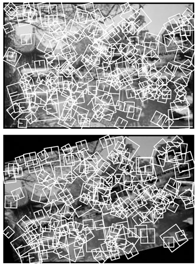
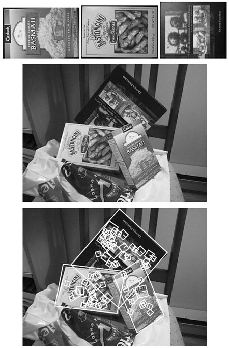
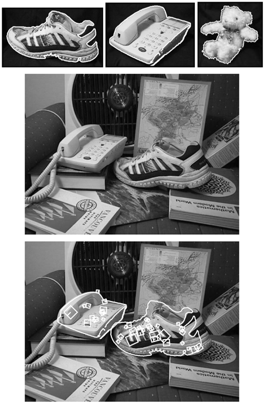
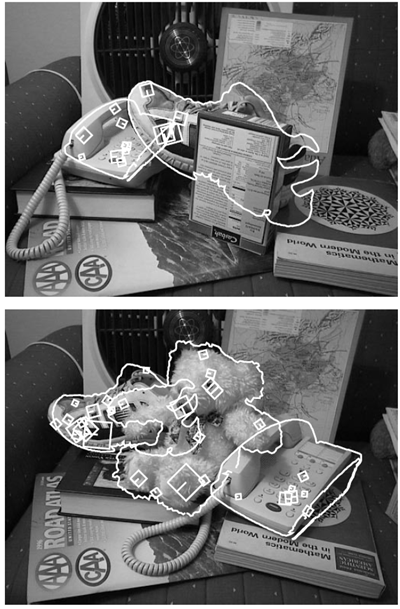
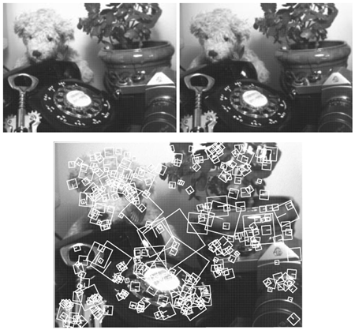

<!doctype html>
<html lang="ja">
    <head>
        <script type="text/javascript" id="MathJax-script" async
        src="https://cdn.jsdelivr.net/npm/mathjax@3/es5/tex-chtml.js"></script>
        <meta charset="utf-8" />
        <title>Object Recognition from Local Scale-Invariant Features</title>
        <style type="text/css">
            p
            {
                padding-left: 2em;
            }
           .margin-abstract {
               margin-left: 60px; /* 左マージンを広くする */
               margin-right: 60px; /* 右マージンを広くする */
           }
        </style>
    <style>
        .styleRef { 
            text-indent: -40px; /* 最初の行の字下げを逆方向に */
            margin-left: 10px; /* 2行目以降の字下げを調整 */
            ul {
                  list-style-type: none; /* 箇条書き記号を非表示 */
                  padding-left: 40px; /* 全体の左余白 */
            }
            li {
            }
        }
    </style>
    <style>
        .styleBullet { 
            text-indent: -20px; /* 最初の行の字下げを逆方向に */
            margin-left: 30px; /* 2行目以降の字下げを調整 */
            ul {
                  list-style-type: none; /* 箇条書き記号を非表示 */
                  padding-left: 40px; /* 全体の左余白 */
            }
            li {
            }
        }
    </style>
<style>
.container {
  display: flex;
  flex-wrap: wrap;
}
.column {
  flex: 0.50%; /* 幅を50%に設定して2列に */
  box-sizing: border-box;
  padding: 10px;
}
</style>

    </head>
    <body>
        <h1><center>Object Recognition from Local Scale-Invariant Features<br><span style="color:blue;">局所スケール不変特徴からの物体認識</span></center></h1>

<center>David G. Lowe</center>
<center>Computer Science Department </center>
<center>University of British Columbia </center>
<center>Vancouver, B.C., V6T 1Z4, Canada</center>
<center>lowe@cs.ubc.ca</center>

<h2><center>Abstract <span style="color:blue;">要旨</span></center></h2>


<p>
An object recognition system has been developed that uses a 
new class of local image features. The features are invariant 
to image scaling, translation, and rotation, and partially invariant 
to illumination changes and affine or 3D projection. 
These features share similar properties with neurons in inferior 
temporal cortex that are used for object recognition 
in primate vision. Features are efficiently detected through 
a staged filtering approach that identifies stable points in 
scale space. Image keys are created that allow for local geometric 
deformations by representing blurred image gradients 
in multiple orientation planes and at multiple scales. 
The keys are used as input to a nearest-neighbor indexing 
method that identifies candidate object matches. Final verification 
of each match is achieved by finding a low-residual 
least-squares solution for the unknown model parameters. 
Experimental results show that robust object recognition 
can be achieved in cluttered partially-occluded images with 
a computation time of under 2 seconds.

<br><span style="color:blue;">
新しいクラスの局所画像特徴を用いた物体認識システムが開発されました。これらの特徴は、画像の拡大縮小、並進、回転に対して不変であり、照明の変化やアフィン投影、3D投影に対して部分的に不変です。これらの特徴は、霊長類の視覚における物体認識に用いられる下側頭葉皮質のニューロンと同様の特性を持っています。特徴は、スケール空間内の安定点を識別する段階的フィルタリング手法によって効率的に検出されます。複数の方向平面と複数のスケールでぼやけた画像勾配を表現することで、局所的な幾何学的変形を可能にする画像キーが作成されます。これらのキーは、候補となる物体の一致を識別する最近傍インデックス法への入力として使用されます。各一致の最終的な検証は、未知のモデルパラメータに対して低残差最小二乗解を求めることによって行われます。実験結果によると、乱雑で部分的に遮蔽された画像でも、2秒未満の計算時間で堅牢な物体認識を実現できることが示されています。
</span>
</p>

<h2>1. Introduction <span style="color:blue;">はじめに</span></h2>
<p>
Object recognition in cluttered real-world scenes requires 
local image features that are unaffected by nearby clutter or 
partial occlusion. The features must be at least partially invariant 
to illumination, 3D projective transforms, and common 
object variations. On the other hand, the features must 
also be sufficiently distinctive to identify specific objects 
among many alternatives. The difficulty of the object recognition 
problem is due in large part to the lack of success in 
finding such image features. However, recent research on 
the use of dense local features (e.g., Schmid & Mohr [19]) 
has shown that efficient recognition can often be achieved 
by using local image descriptors sampled at a large number 
of repeatable locations. 

<br><span style="color:blue;">
雑然とした現実世界のシーンにおける物体認識には、近傍の乱雑さや部分的な遮蔽の影響を受けない局所的な画像特徴が必要です。これらの特徴は、照明、3次元射影変換、および一般的な物体の変動に対して、少なくとも部分的に不変でなければなりません。一方で、これらの特徴は、多くの選択肢の中から特定の物体を識別できるほど十分に特徴的でなければなりません。物体認識問題の難しさは、主にそのような画像特徴の発見が成功しない点に起因しています。しかし、稠密な局所特徴の利用に関する最近の研究（例：Schmid & Mohr [19]）では、多数の繰り返し可能な位置でサンプリングされた局所的な画像記述子を使用することで、効率的な認識が達成できる場合が多いことが示されています。
</span>
</p><p>

This paper presents a new method for image feature generation 
called the Scale Invariant Feature Transform (SIFT). 
This approach transforms an image into a large collection 
of local feature vectors, each of which is invariant to image 
translation, scaling, and rotation, and partially invariant to 
illumination changes and affine or 3D projection. Previous 
approaches to local feature generation lacked invariance to 
scale and were more sensitive to projective distortion and 
illumination change. The SIFT features share a number of 
properties in common with the responses of neurons in inferior 
temporal (IT) cortex in primate vision. This paper also 
describes improved approaches to indexing and model verification.

<br><span style="color:blue;">
本論文では、画像特徴生成のための新しい手法であるスケール不変特徴変換（SIFT）を紹介する。
この手法は、画像を大規模な局所特徴ベクトルの集合に変換する。各特徴ベクトルは画像の移動、拡大縮小、回転に対して不変であり、照明変化やアフィン投影、3D投影に対して部分的に不変である。従来の局所特徴生成手法はスケール不変ではなく、投影歪みや照明変化に対してより敏感であった。SIFT特徴は、霊長類の視覚における下側頭葉（IT）皮質のニューロンの応答と共通する多くの特性を持つ。本論文では、インデックス作成とモデル検証に対する改良された手法についても説明する。
</span>
</p><p>

The scale-invariant features are efficiently identified by 
using a staged filtering approach. The first stage identifies 
key locations in scale space by looking for locations that 
are maxima or minima of a difference-of-Gaussian function. 
Each point is used to generate a feature vector that describes 
the local image region sampled relative to its scale-space coordinate 
frame. The features achieve partial invariance to 
local variations, such as affine or 3D projections, by blurring 
image gradient locations. This approach is based on a 
model of the behavior of complex cells in the cerebral cortex 
of mammalian vision. The resulting feature vectors are 
called SIFT keys. In the current implementation, each image 
generates on the order of 1000 SIFT keys, a process that 
requires less than 1 second of computation time. 

<br><span style="color:blue;">
スケール不変特徴は、段階的フィルタリング手法を用いることで効率的に識別されます。第1段階では、ガウス関数の差の最大値または最小値となる位置を探すことで、スケール空間内の主要な位置を特定します。各点は、スケール空間座標フレームを基準としてサンプリングされた局所画像領域を記述する特徴ベクトルを生成するために使用されます。特徴は、画像の勾配位置をぼかすことで、アフィン投影や3D投影などの局所的な変動に対して部分的な不変性を実現します。この手法は、哺乳類の視覚における大脳皮質の複雑な細胞の挙動モデルに基づいています。結果として得られる特徴ベクトルは、SIFTキーと呼ばれます。現在の実装では、各画像は約1000個のSIFTキーを生成し、この処理に必要な計算時間は1秒未満です。
</span>
</p><p>

The SIFT keys derived from an image are used in a 
nearest-neighbour approach to indexing to identify candidate 
object models. Collections of keys that agree on a potential 
model pose are first identified through a Hough transformhash 
table,and thenthroughaleast-squaresfit toafinal 
estimate of model parameters. When at least 3 keys agree 
on the model parameters with low residual, there is strong 
evidence for the presence of the object. Since there may be 
dozens of SIFT keys in the image of a typical object, it is 
possible to have substantial levels of occlusion in the image 
and yet retain high levels of reliability. 

<br><span style="color:blue;">
画像から得られたSIFTキーは、最近傍法によるインデックス作成に使用され、候補となる物体モデルを識別します。潜在的なモデルの姿勢に一致するキーの集合は、まずハフ変換ハッシュテーブルを用いて識別され、次に最小二乗近似を用いてモデルパラメータの最終推定値が得られます。少なくとも3つのキーがモデルパラメータに低い残差で一致する場合、物体の存在を示す強力な証拠となります。典型的な物体の画像には数十個のSIFTキーが存在する可能性があるため、画像にかなりのレベルの遮蔽があっても、高い信頼性を維持することが可能です。
</span>
</p><p>

The current object models are represented as 2D locations 
of SIFT keys that can undergo affine projection. Sufficient 
variation in feature location is allowed to recognize 
perspective projection of planar shapes at up to a 60 degree 
rotation away from the camera or to allow up to a 20 degree 
rotation of a 3D object. 

<br><span style="color:blue;">
現在のオブジェクトモデルは、アフィン投影が可能なSIFTキーの2次元位置として表現されます。特徴点の位置には十分な変化が許容されるため、カメラから最大60度回転した平面形状の透視投影を認識でき、3Dオブジェクトの場合は最大20度回転できます。
</span>
</p>

<h2>2. Related research <span style="color:blue;">関連研究</span></h2>
<p>
Object recognition is widely used in the machine vision industry 
for the purposes of inspection, registration, and manipulation. 
However, current commercial systems for object 
recognition depend almost exclusively on correlation-based 
template matching. While very effective for certain engineered 
environments, where object pose and illumination 
aretightlycontrolled,templatematchingbecomes computationally 
infeasible when object rotation, scale, illumination, 
and 3D pose are allowed to vary, and even more so when 
dealing with partial visibility and large model databases. 

<br><span style="color:blue;">
物体認識は、マシンビジョン業界で検査、位置合わせ、操作の目的で広く利用されています。
しかしながら、現在の商用物体認識システムは、相関ベースのテンプレートマッチングにほぼ全面的に依存しています。物体の姿勢と照明が厳密に制御されている特定の工学環境では非常に効果的ですが、物体の回転、スケール、照明、3D姿勢が変化する可能性がある場合、テンプレートマッチングは計算上不可能になり、部分的な可視性や大規模なモデルデータベースを扱う場合はさらに困難になります。
</span>
</p><p>

An alternative to searching all image locations for 
matches is to extract features from the image that are at 
least partially invariant to the image formation process and 
matching only to those features. Many candidate feature 
types have been proposed and explored, including line segments 
[6], groupings of edges [11, 14], and regions [2], 
among many other proposals. While these features have 
worked well for certain object classes, they are often not detected 
frequently enough or with sufficient stability to form 
a basis for reliable recognition.

<br><span style="color:blue;">
画像のすべての位置を検索して一致を探す代わりに、画像から、画像形成プロセスに対して少なくとも部分的に不変な特徴を抽出し、それらの特徴のみに一致させることが考えられます。線分[6]、エッジのグループ化[11, 14]、領域[2]など、多くの候補となる特徴タイプが提案され、検討されてきました。これらの特徴は特定のオブジェクトクラスではうまく機能していますが、信頼性の高い認識の基盤を形成するのに十分な頻度で、または十分な安定性で検出されないことがよくあります。
</span>
</p><p>

There has been recent work on developing much denser 
collections of image features. One approach has been to 
use a corner detector (more accurately, a detector of peaks 
in local image variation) to identify repeatable image locations, 
around which local image properties can be measured. 
Zhang et al. [23] used the Harris corner detector to identify 
feature locations for epipolar alignment of images taken 
from differing viewpoints. Rather than attempting to correlate 
regions from one image against all possible regions 
in a second image, large savings in computation time were 
achieved by only matching regions centered at corner points 
in each image.e.

<br><span style="color:blue;">
近年、画像特徴のより高密度なコレクションの開発に関する研究が行われています。その1つのアプローチは、コーナー検出器（より正確には、局所的な画像変動のピーク検出器）を用いて、画像上の再現性のある位置を特定し、その周囲で局所的な画像特性を測定するというものです。Zhangら[23]は、Harrisコーナー検出器を用いて、異なる視点から撮影された画像のエピポーラアライメントのための特徴位置を特定しました。ある画像の領域を別の画像のすべての可能性のある領域と相関させるのではなく、各画像のコーナー点を中心とした領域のみをマッチングさせることで、計算時間を大幅に節約しました。
</span>
</p><p>

For the object recognition problem, Schmid & Mohr 
[19] also used the Harris corner detector to identify interest 
points, and then created a local image descriptor at 
each interest point from an orientation-invariant vector of 
derivative-of-Gaussian image measurements. These image 
descriptors were used for robust object recognition by looking 
for multiple matching descriptors that satisfied object-
based orientation and location constraints. This work was 
impressive both for the speed of recognition in a large 
database and the ability to handle cluttered images. 

<br><span style="color:blue;">
物体認識問題において、Schmid & Mohr
[19] は、Harrisコーナー検出器を用いて関心点を識別し、各関心点において、ガウス分布の微分画像測定値の方向不変ベクトルから局所画像記述子を作成した。これらの画像記述子は、物体に基づく方向と位置の制約を満たす複数の一致する記述子を探すことで、堅牢な物体認識に使用された。この研究は、大規模データベースにおける認識速度と、乱雑な画像を処理する能力の両方において印象的であった。
</span>
</p><p>

The corner detectors used in these previous approaches 
have a major failing, which is that they examine an image 
at only a single scale. As the change in scale becomes significant, 
these detectors respond to different image points. 
Also, since the detector does not provide an indication of the 
object scale, it is necessary to create image descriptors and 
attempt matching at a large number of scales. This paper describes 
an efficient method to identify stable key locations 
in scale space. This means that different scalings of an image 
will have no effect on the set of key locations selected. 
Furthermore, an explicit scale is determined for each point, 
which allows the image description vector for that point to 
be sampled at an equivalent scale in each image. A canonical 
orientation is determined at each location, so that matching 
can be performed relative to a consistent local 2D coordinate 
frame. This allows for the use of more distinctive 
image descriptors than the rotation-invariant ones used by 
Schmid and Mohr, and the descriptor is further modified to 
improve its stability to changes in affine projection and illumination.

<br><span style="color:blue;">
従来のアプローチで使用されているコーナー検出器には、画像を単一のスケールでしか検査しないという大きな欠点があります。スケールの変化が大きくなると、これらの検出器は異なる画像点に反応します。また、検出器は物体のスケールを示していないため、画像記述子を作成し、多数のスケールでマッチングを試行する必要があります。本論文では、スケール空間において安定したキー位置を特定する効率的な手法について説明します。これは、画像の異なるスケーリングが、選択されたキー位置の集合に影響を与えないことを意味します。さらに、各点に対して明示的なスケールが決定されるため、各画像においてその点の画像記述ベクトルを同等のスケールでサンプリングすることができます。各位置で標準的な方向が決定されるため、一貫したローカル2D座標系を基準としてマッチングを実行できます。これにより、SchmidとMohrが使用した回転不変の画像記述子よりも特徴的な画像記述子の使用が可能になり、記述子はさらに修正され、アフィン投影と照明の変化に対する安定性が向上します。
</span>
</p><p>

Other approaches to appearance-based recognition include 
eigenspace matching [13], color histograms [20], and 
receptive field histograms [18]. These approaches have all 
been demonstrated successfully on isolated objects or presegmented 
images, but due to their more global features it 
has been difficult to extend them to cluttered and partially 
occluded images. Ohba & Ikeuchi [15] successfully apply 
the eigenspace approach to cluttered images by using many 
small local eigen-windows, but this then requires expensive 
search for each window in a new image, as with template 
matching.

<br><span style="color:blue;">
外観ベースの認識に対する他のアプローチとしては、固有空間マッチング [13]、色ヒストグラム [20]、受容野ヒストグラム [18] などがある。これらのアプローチはいずれも孤立した物体や事前にセグメント化された画像では成功が実証されているが、より大域的な特徴を持つため、乱雑な画像や部分的に遮蔽された画像に拡張することは困難であった。Ohba & Ikeuchi [15] は、多数の小さな局所的な固有ウィンドウを用いることで、乱雑な画像に固有空間アプローチを適用することに成功したが、テンプレートマッチングと同様に、新しい画像の各ウィンドウに対してコストのかかる探索が必要となる。
</span>
</p>

<h2>3. Key localization <span style="color:blue;">キーの定位</span></h2>
<p>

We wish to identify locations in image scale space that are 
invariant with respect to image translation, scaling, and rotation, 
and are minimally affected by noise and small distortions. 
Lindeberg [8] has shown that under some rather 
general assumptions on scale invariance, the Gaussian kernel 
and its derivatives are the only possible smoothing kernels 
for scale space analysis. 

<br><span style="color:blue;">
我々は、画像スケール空間において、画像の移動、拡大縮小、回転に対して不変であり、ノイズや小さな歪みの影響が最小限である位置を特定したいと考えています。
Lindeberg [8] は、スケール不変性に関するいくつかの比較的一般的な仮定の下で、ガウスカーネルとその導関数が、スケール空間解析に使用可能な唯一の平滑化カーネルであることを示しました。
</span>
</p><p>

To achieve rotation invariance and a high level of efficiency, 
we have chosen to select key locations at maxima 
and minima of a difference of Gaussian function applied in 
scale space. This can be computed very efficiently by building 
an image pyramid with resampling between each level. 
Furthermore, it locates key points at regions and scales of 
high variation, making these locations particularly stable for 
characterizing the image. Crowley & Parker [4] and Lindeberg 
[9] have previously used the difference-of-Gaussian in 
scale space for other purposes. In the following, we describe 
a particularly efficient and stable method to detect and characterize 
the maxima and minima of this function. 

<br><span style="color:blue;">
回転不変性と高い効率性を実現するために、スケール空間に適用されたガウス関数の差の最大値と最小値における重要な位置を選択することにしました。これは、各レベル間で再サンプリングを行った画像ピラミッドを構築することで非常に効率的に計算できます。さらに、この手法は、変化の大きい領域とスケールに重要な点を配置するため、これらの位置は画像の特性評価において特に安定します。Crowley & Parker [4] と Lindeberg [9] は、スケール空間におけるガウス関数の差を他の目的で使用していました。以下では、この関数の最大値と最小値を検出し、特性評価するための特に効率的で安定した手法について説明します。
</span>
</p><p>

As the 2D Gaussian function is separable, its convolution 
with the input image can be efficiently computed by applying 
two passes of the 1D Gaussian function in the horizontal 
and vertical directions: 

<br><span style="color:blue;">
2次元ガウス関数は分離可能であるため、入力画像との畳み込みは、1次元ガウス関数を水平方向と垂直方向に2回適用することで効率的に計算できます。
</span>

\[
g(x)=\frac{1}{\sqrt{2π}σ}e^{-x^2/2σ^2}
\]

For key localization, all smoothing operations are done using \(σ=\sqrt{2}\), which can be approximated with suf ficient accuracy using a 1D kernel with 7 sample points.

<br><span style="color:blue;">
キーの位置特定では、すべての平滑化操作は \(σ=\sqrt{2}\) を使用して実行されます。これは、7 つのサンプル ポイントを持つ 1D カーネルを使用して十分な精度で近似できます。
</span>
</p><p>

The input image is  first convolved with the Gaussian
function using \(σ=\sqrt{2}\) to give an image A. This is then repeated a second time with a further incremental smoothing of \(σ=\sqrt{2}\) to give a new image, B, which now has an effective smoothing of \(σ=2\). The difference of Gaussian functionis obtained by subtractingimage B from A, resulting in a ratio of \(2/\sqrt{2}=\sqrt{2}\) between the two Gaussians.

<br><span style="color:blue;">
入力画像はまず、\(σ=\sqrt{2}\) を用いてガウス関数で畳み込まれ、画像Aが生成されます。次に、\(σ=\sqrt{2}\) の増分平滑化を施して2回目の畳み込みを行い、実効平滑化が \(σ=2\) である新しい画像Bが生成されます。ガウス関数の差は、画像Aから画像Bを減算することで得られ、2つのガウス関数の比は \(2/\sqrt{2}=\sqrt{2}\) となります。
</span>
</p><p>

To generate the next pyramid level, we resample the al-ready smoothed image B using bilinear interpolationwith a pixel spacing of 1.5 in each direction. While it may seem
more natural to resample with a relative scale of \(\sqrt{2}\), the only constraint is that sampling be frequent enough to de-tect peaks. The 1.5 spacing means that each new sample will be a constant linear combination of 4 adjacent pixels. This is ef ficient to compute and minimizes aliasing artifacts that would arise from changing the resampling coef ficients.

<br><span style="color:blue;">
次のピラミッドレベルを生成するために、既に平滑化された画像Bを、各方向に1.5ピクセル間隔で双線形補間を用いて再サンプリングします。相対スケール\(\sqrt{2}\)で再サンプリングする方が自然に思えるかもしれませんが、唯一の制約は、ピークを検出できるほど頻繁にサンプリングすることです。1.5間隔は、各新しいサンプルが隣接する4つのピクセルの定数線形結合になることを意味します。これは計算効率が高く、再サンプリング係数の変更によって生じるエイリアシングアーティファクトを最小限に抑えます。
</span>
</p><p>

Maxima and minima of this scale-space function are de-termined by comparing each pixel in the pyramid to its neighbours.  first, a pixel is compared to its 8 neighboursat the same level of the pyramid. If it is a maxima or minima at this level, then the closest pixel location is calculated at the next lowest level of the pyramid, taking account of the 1.5 times resampling. If the pixel remains higher (or lower) than this closest pixel and its 8 neighbours, then the test is repeated forthelevel above. Since most pixelswill beelim-inatedwithina fewcomparisons, thecost ofthisdetectionis small and much lower than that of buildingthe pyramid.

<br><span style="color:blue;">
このスケール空間関数の最大値と最小値は、ピラミッド内の各ピクセルをその近傍ピクセルと比較することで決定されます。まず、あるピクセルをピラミッドの同じレベルにある8つの近傍ピクセルと比較します。このレベルで最大値または最小値となる場合、1.5倍の再サンプリングを考慮して、ピラミッドの次に低いレベルで最も近いピクセルの位置を計算します。この最も近いピクセルとその8つの近傍ピクセルよりも高い（または低い）ままである場合、上のレベルに対して同じテストを繰り返します。ほとんどのピクセルは数回の比較で除去されるため、この検出にかかるコストは小さく、ピラミッドを構築するコストよりもはるかに低くなります。
</span>
</p><p>

If the first level of the pyramid is sampled at the same rate 
as the input image, the highest spatial frequencies will be ignored. 
This is due to the initial smoothing, which is needed 
to provide separation of peaks for robust detection. Therefore, 
we expand the input image by a factor of 2, using bilinear 
interpolation, prior to building the pyramid. This gives 
on the order of 1000 key points for a typical 512×512 pixel 
image, compared to only a quarter as many without the initial 
expansion. 

<br><span style="color:blue;">
ピラミッドの最初のレベルが入力画像と同じレートでサンプリングされると、最も高い空間周波数は無視されます。
これは、ロバストな検出のためにピークを分離するために必要な初期平滑化によるものです。そのため、ピラミッドを構築する前に、双線形補間を使用して入力画像を2倍に拡大します。これにより、典型的な512×512ピクセルの画像では、キーポイントの数は約1000個になります。これは、初期拡大を行わない場合の4分の1に相当します。
</span>
</p>

<h3>3.1. SIFT key stability <span style="color:blue;">SIFTキーの安定性</span></h3>
<p>
To characterize the image at each key location, the smoothed 
image A at each level of the pyramid is processed to extract 
image gradients and orientations. At each pixel,\(A_{ij}\), theimage 
gradientmagnitude,\(M_{ij}\) , and orientation,\(R_{ij}\), are computed 
using pixel differences:

<br><span style="color:blue;">
各キー位置における画像を特徴付けるために、ピラミッドの各レベルで平滑化された画像Aを処理し、画像の勾配と方向を抽出します。各ピクセル\(A_{ij}\)において、画像の勾配の大きさ\(M_{ij}\)と方向\(R_{ij}\)がピクセル差を用いて計算されます。
</span>

\[
\begin{align}
M_{ij} &= \sqrt{(A_{ij}-A_{i+1,j})^2+(A_{i,j}-A_{i,j+1})^2} \\
\\
R_{ij} &= \text{atan2}(A_{ij}-A_{i+1,j}, A_{i,j+1}-A_{ij})
\end{align}
\]

The pixel differences are efficient to compute and provide 
sufficient accuracy due to the substantial level of previous 
smoothing. The effective half-pixel shift in position is compensated 
for when determining key location. 

<br><span style="color:blue;">
ピクセル差の計算は効率的に行われ、十分な精度が得られます。
事前の平滑化が十分に行われているため。
キーの位置を決定する際に、実効的な半ピクセルの位置ずれが補正されます。
</span>
</p><p>

Robustness to illumination change is enhanced by thresholding 
the gradient magnitudes at a value of 0.1 times the maximum possible gradient value. This reduces the effect 
of a change in illumination direction for a surface with 3D 
relief, as an illumination change may result in large changes 
to gradient magnitude but is likely to have less influence on 
gradient orientation. 

<br><span style="color:blue;">
照明変化に対する堅牢性は、勾配の強さを最大勾配値の0.1倍の値で閾値設定することで強化されます。これにより、3Dレリーフを持つサーフェスにおける照明方向の変化の影響が軽減されます。照明変化は勾配の強さに大きな変化をもたらす可能性がありますが、勾配の向きへの影響は小さいと考えられます。
</span>
</p><p>

Each key location is assigned a canonical orientation so 
that the image descriptors are invariant to rotation. In order 
to make this as stable as possible against lighting or contrast 
changes, the orientation is determined by the peak in a 
histogram of local image gradient orientations. The orientation 
histogram is created using a Gaussian-weighted window 
with \(σ\) of 3 times that of the current smoothing scale. 
These weights are multiplied by the thresholded gradient 
values and accumulated in the histogram at locations corresponding 
to the orientation,\(R_{ij}\). The histogramhas 36 bins 
covering the 360 degree range of rotations, and is smoothed 
prior to peak selection. 

<br><span style="color:blue;">
各キー位置には標準的な方向が割り当てられているため、画像記述子は回転に対して不変です。照明やコントラストの変化に対してこれを可能な限り安定させるため、方向は局所的な画像勾配方向のヒストグラムのピークによって決定されます。方向ヒストグラムは、\(σ\) が現在の平滑化スケールの3倍であるガウス重み付けウィンドウを使用して作成されます。これらの重みは閾値勾配値に乗算され、ヒストグラム内の方向 \(R_{ij}\) に対応する位置に累積されます。ヒストグラムは360度の回転範囲をカバーする36のビンを持ち、ピーク選択の前に平滑化されます。
</span>
</p><p>

The stability of the resulting keys can be tested by subjecting 
natural images to affine projection, contrast and 
brightness changes, and addition of noise. The location of 
each key detected in the first image can be predicted in the 
transformed image from knowledge of the transform parameters. 
This framework was used to select the various sampling 
and smoothing parameters given above, so that maximum efficiency could be obtained while retaining stability 
to changes. 

<br><span style="color:blue;">
得られたキーの安定性は、自然画像にアフィン投影、コントラストと明るさの変化、ノイズの付加を施すことでテストできます。最初の画像で検出された各キーの位置は、変換パラメータの知識から変換後の画像で予測できます。
このフレームワークは、上記の様々なサンプリングおよびスムージングパラメータを選択するために使用され、変化に対する安定性を維持しながら最大の効率が得られました。
</span>
</p><p>

Figure 1 shows a relatively small number of keys detected 
over a 2 octave range of only the larger scales (to 
avoid excessive clutter). Each key is shown as a square, with 
a line from the center to one side of the square indicating orientation. 
In the second half of this figure, the image is rotated 
by 15 degrees, scaled by a factor of 0.9, and stretched 
by a factor of 1.1 in the horizontal direction. The pixel intensities, 
in the range of 0 to 1, have 0.1 subtracted from their 
brightness values and the contrast reduced by multiplication 
by 0.9. Random pixel noise is then added to give less than 
5 bits/pixel of signal. In spite of these transformations, 78% 
of the keys in the first image had closely matching keys in 
the second image at the predicted locations, scales, and orientations 

<br><span style="color:blue;">
図1は、2オクターブの範囲にわたって、大きなスケールのみで検出された比較的少数のキーを示しています（過度の混乱を避けるため）。各キーは正方形で示され、中心から正方形の一辺に向かう線は方向を示しています。図の後半では、画像が15度回転され、0.9倍に拡大され、水平方向に1.1倍に引き伸ばされています。0から1の範囲のピクセル強度は、輝度値から0.1が差し引かれ、コントラストは0.9倍に下げられています。その後、ランダムなピクセルノイズが追加され、信号は5ビット/ピクセル未満になります。これらの変換にもかかわらず、最初の画像のキーの78%は、予測された位置、スケール、および方向において、2番目の画像にほぼ一致するキーを持っていました。
</span>
</p>

<center></center>

<p>

Figure 1: The second image was generated from the first by 
rotation, scaling, stretching, change of brightness and contrast, 
and addition of pixel noise. In spite of these changes, 
78% of the keys from the first image have a closely matching 
key in the second image. These examples show only a 
subset of the keys to reduce clutter. 

<br><span style="color:blue;">
図1：2枚目の画像は、1枚目の画像から、回転、拡大縮小、引き伸ばし、明るさとコントラストの変更、ピクセルノイズの追加によって生成されました。これらの変更にもかかわらず、1枚目の画像のキーの78%は、2枚目の画像にもほぼ一致するキーを持っています。これらの例では、煩雑さを軽減するために、キーのサブセットのみを示しています。
</span>
</p><p>

The overall stability of the keys to image transformations 
can be judged from Table 2. Each entry in this table is generated 
from combining the results of 20 diverse test images 
and summarizes the matching of about 15,000 keys. Each 
line of the table shows a particular image transformation. 
The first figure gives the percent of keys that have a matching 
key in the transformed image within  in location (relative 
to scale for that key) and a factor of 1.5 in scale. The 
second column gives the percent that match these criteria as 
well as having an orientation within 20 degrees of the prediction. 

<br><span style="color:blue;">
画像変換に対するキーの全体的な安定性は、表2から判断できます。この表の各項目は、20種類の異なるテスト画像の結果を組み合わせて生成され、約15,000個のキーのマッチングを要約しています。表の各行は、特定の画像変換を示しています。最初の図は、変換された画像において、位置（そのキーのスケールを基準として）とスケール係数1.5の範囲内に一致するキーを持つキーの割合を示しています。2番目の列は、これらの基準に一致し、かつ予測から20度以内の方向を持つキーの割合を示しています。
</span>

\[
\begin{array}{|l|c|c|}
\hline
\textbf{画像変換} & \textbf{Match %} & \textbf{Ori %} \\
\hline
\text{A. コントラストを1.2倍} & 89.0 & 86.6 \\ 
\hline
\text{B. 輝度を0.2下げる} &  88.5 & 85.9 \\ 
\hline
\text{C. 20°回転} &  85.4 & 81.0 \\ 
\hline
\text{D. 0.7倍に縮小} &  85.1 & 80.3 \\ 
\hline
\text{E. 1.2倍拡大} &  83.5 & 76.1 \\ 
\hline
\text{F. 1.5倍拡大} &  77.7 & 65.0 \\ 
\hline
\text{G. 10%ピクセルノイズ付加} &  90.3 & 88.4 \\ 
\hline
\text{H. A～Gのすべて} &  78.6 & 71.8 \\
\hline
\end{array}
\]

Figure 2: For various image transformations applied to a 
sample of 20 images, this table gives the percent of keys that 
are found at matching locations and scales (Match %) and 
that also match in orientation (Ori %).

<br><span style="color:blue;">
図2：20枚の画像サンプルに様々な画像変換を適用した場合、この表は、一致する位置とスケール（一致率）で見つかったキーと、方向（方向率）も一致するキーの割合を示しています。
</span>
</p>

<h2>4. Local image description <span style="color:blue;">局所画像記述</span></h2>
<p>
Given a stable location, scale, and orientation for each key, it 
is now possible to describe the local image region in a mannerinvarianttothesetransformations. 
Inaddition,itisdesirable 
to make this representation robust against small shifts 
in local geometry, such as arise from affine or 3D projection. 
One approach to this is suggested by the response properties 
of complex neurons in the visual cortex, in which a feature 
position is allowed to vary over a small region while orientation 
and spatial frequency specificity are maintained. Edelman, 
Intrator & Poggio [5] have performed experiments that 
simulated the responses of complex neurons to different 3D 
views of computer graphic models, and found that the complex 
cell outputs provided much better discrimination than 
simple correlation-based matching. This can be seen, for example, 
if an affine projection stretches an image in one direction 
relative to another, which changes the relative locations 
of gradient features while having a smaller effect on 
their orientations and spatial frequencies. 

<br><span style="color:blue;">
各キーの位置、スケール、および方向が安定していれば、
これらの変換に対して不変な方法で局所的な画像領域を記述することが可能になります。
さらに、この表現を、アフィン投影や3D投影などによって生じる局所的な幾何学的変化に対して堅牢にすることが望ましいです。
このための1つのアプローチは、視覚皮質の複雑ニューロンの応答特性によって示唆されています。この特性では、特徴の位置は小さな領域内で変化しますが、方向と空間周波数の特異性は維持されます。Edelman、Intrator、Poggio [5]は、コンピュータグラフィックスモデルの異なる3Dビューに対する複雑ニューロンの応答をシミュレートする実験を行い、複雑な細胞出力は単純な相関ベースのマッチングよりもはるかに優れた識別を提供することを発見しました。これは、例えば、アフィン投影が画像をある方向に引き伸ばし、別の方向に引き伸ばす場合に見られます。これにより、勾配特徴の相対的な位置は変化しますが、勾配特徴の方向と空間周波数への影響は小さくなります。
</span>
</p><p>

This robustness to local geometric distortion can be obtained 
by representing the local image region with multiple 
images representing each of a number of orientations (referred 
to as orientation planes). Each orientation plane contains 
only the gradients corresponding to that orientation, 
with linear interpolation used for intermediate orientations. 
Each orientation plane is blurred and resampled to allow for 
larger shifts in positions of the gradients. 

<br><span style="color:blue;">
局所的な幾何学的歪みに対するこの堅牢性は、局所的な画像領域を複数の方向（方向平面と呼ばれる）のそれぞれを表す複数の画像で表現することによって実現されます。各方向平面には、その方向に対応する勾配のみが含まれ、中間の方向については線形補間が使用されます。各方向平面は、勾配の位置のより大きなシフトを許容するために、ぼかしと再サンプリングが行われます。
</span>
</p><p>

This approach can be efficiently implemented by using 
the same precomputed gradients and orientations for each 
level of the pyramid that were used for orientation selection. 
For each keypoint, we use the pixel sampling from the pyramid 
level at which the key was detected. The pixels that fall 
in a circle of radius 8 pixels around the key location are inserted 
into the orientation planes. The orientation is measured 
relative to that of the key by subtracting the key’s orientation. 
For our experiments we used 8 orientation planes, 
each sampled over a 4 4grid of locations, with a sample 
spacing 4 times that of the pixel spacing used for gradient 
detection. The blurring is achieved by allocating the gradient 
of each pixel among its 8 closest neighbors in the sample 
grid, using linear interpolation in orientation and the two 
spatial dimensions. This implementation is much more efficient 
than performing explicit blurring and resampling, yet 
gives almost equivalent results. 

<br><span style="color:blue;">
このアプローチは、ピラミッドの各レベルに対して、方向選択に使用したのと同じ事前計算済みの勾配と方向を使用することで効率的に実装できます。
各キーポイントについて、キーが検出されたピラミッドレベルからのピクセルサンプリングを使用します。キーの位置から半径8ピクセルの円内にあるピクセルが、方向平面に挿入されます。方向は、キーの方向を差し引くことで、キーの方向を基準として測定されます。
実験では、8つの方向平面を使用しました。各平面は4×4グリッドの位置でサンプリングされ、サンプル間隔は勾配検出に使用したピクセル間隔の4倍です。ぼかしは、方向と2つの空間次元の線形補間を使用して、サンプルグリッド内の8つの最も近い近傍ピクセルに各ピクセルの勾配を割り当てることで実現されます。この実装は、明示的なぼかしとリサンプリングを実行するよりもはるかに効率的でありながら、
ほぼ同等の結果をもたらします。
</span>
</p><p>

In order to sample the image at a larger scale, the same 
process is repeated for a second level of the pyramid one octave 
higher. However, this time a 2×2rather than a 4×4 
sample region is used. This means that approximately the 
same image region will be examined at both scales, so that 
any nearby occlusions will not affect one scale more than the 
other. Therefore, the total number of samples in the SIFT 
key vector, from both scales, is 8×4×4+8×2×2 or 160 
elements, giving enough measurements for high specificity. 

<br><span style="color:blue;">
より大きなスケールで画像をサンプリングするために、ピラミッドの1オクターブ上の2番目のレベルに対して同じプロセスを繰り返します。ただし、今回は4×4ではなく2×2のサンプル領域を使用します。これは、両方のスケールでほぼ同じ画像領域が検査されることを意味します。そのため、近くの遮蔽物が一方のスケールに他方よりも大きな影響を与えることはありません。したがって、SIFTキーベクトルのサンプル数は、両方のスケールから合計8×4×4+8×2×2、つまり160要素となり、高い特異度を得るのに十分な測定値が得られます。
</span>
</p>

<h2>5. Indexing and matching <span style="color:blue;">インデックス振りとマッチング</span></h2>
<p>
For indexing, we need to store the SIFT keys for sample images 
and then identify matching keys from new images. The 
problem of identifyingthe most similar keys for high dimensional vectors is known to have high complexity if an exact 
solution is required. However, a modification of the k-d 
tree algorithm called the best-bin-first search method (Beis 
& Lowe [3]) can identify the nearest neighbors with high 
probability using only a limited amount of computation. To 
furtherimprovetheefficiency ofthebest-bin-firstalgorithm, 
the SIFT key samples generated at the larger scale are given 
twice the weight of those at the smaller scale. This means 
that the larger scale is in effect able to filter the most likely 
neighbours for checking at the smaller scale. This also improves 
recognition performance by giving more weight to 
the least-noisy scale. In our experiments, it is possible to 
have a cut-off for examining at most 200 neighbors in a 
probabilisticbest-bin-firstsearch of30,000key vectors with 
almost no loss of performance compared to finding an exact 
solution. 

<br><span style="color:blue;">
インデックス作成のためには、サンプル画像のSIFTキーを保存し、新しい画像から一致するキーを識別する必要があります。高次元ベクトルの最も類似したキーを識別する問題は、正確な解が求められる場合、非常に複雑になることが知られています。しかし、k-dツリーアルゴリズムの修正版であるbest-bin-first探索法（Beis & Lowe [3]）は、限られた計算量で、高い確率で最近傍点を識別できます。best-bin-firstアルゴリズムの効率をさらに向上させるために、より大きなスケールで生成されたSIFTキーサンプルには、より小さなスケールの2倍の重みが与えられます。これは、より大きなスケールが、より小さなスケールでのチェックのために最も可能性の高い近傍点をフィルタリングできることを意味します。これにより、ノイズの最も少ないスケールに多くの重みが与えられるため、認識性能も向上します。私たちの実験では、30,000個のキーベクトルの確率的ベストビンファーストサーチにおいて、最大200個の近傍を調べるというカットオフを設けても、正確な解を求める場合と比べてパフォーマンスの低下はほとんど見られませんでした。
</span>
</p><p>

An efficient way to cluster reliable model hypotheses 
is to use the Hough transform [1] to search for keys that 
agree upon a particular model pose. Each model key in the 
database contains a record of the key’s parameters relative 
to the model coordinate system. Therefore, we can create 
an entry in a hash table predicting the model location, orientation, 
and scale from the match hypothesis. We use a 
bin size of 30 degrees for orientation, a factor of 2 for scale, 
and 0.25 times the maximum model dimension for location. 
These rather broad bin sizes allow for clustering even in the 
presence of substantial geometric distortion, such as due to a 
change in 3D viewpoint. To avoid the problem of boundary 
effects in hashing, each hypothesis is hashed into the 2 closest 
bins in each dimension, giving a total of 16 hash table 
entries for each hypothesis. 

<br><span style="color:blue;">
信頼性の高いモデル仮説を効率的にクラスタリングする方法は、ハフ変換 [1] を使用して、特定のモデルポーズに一致するキーを検索することです。データベース内の各モデルキーには、モデル座標系を基準としたキーのパラメータの記録が含まれています。したがって、一致する仮説からモデルの位置、方向、スケールを予測するハッシュテーブルのエントリを作成できます。方向には30度、スケールには係数2、位置には最大モデル次元の0.25倍のビンサイズを使用します。これらの比較的広いビンサイズにより、3D視点の変化などによる大きな幾何学的歪みがある場合でもクラスタリングが可能になります。ハッシュにおける境界効果の問題を回避するため、各仮説は各次元で最も近い2つのビンにハッシュされ、各仮説に対して合計16個のハッシュテーブルエントリが作成されます。
</span>
</p>

<h2>6. Solution for affine parameters <span style="color:blue;">アフィンパラメータの解</span></h2>
<p>
The hash table is searched to identify all clusters of at least 
3 entries in a bin, and the bins are sorted into decreasing order 
of size. Each such cluster is then subject to a verification 
procedure in which a least-squares solution is performed for 
the affine projection parameters relating the model to the image. 

<br><span style="color:blue;">
ハッシュテーブルを検索し、ビンに3つ以上のエントリを持つすべてのクラスターを特定し、ビンはサイズの降順でソートされます。次に、各クラスターに対して、モデルと画像を関連付けるアフィン投影パラメータについて最小二乗法を実行する検証手順が実行されます。
</span>
</p><p>

The affine transformation of a model point \([x y]^\top\) to an 
image point \([u v]^\top\) can be written as 

<br><span style="color:blue;">
モデル点\([x y]^\top\)から画像点\([u v]^\top\)へのアフィン変換は次のように表される。
</span>

\[
\begin{bmatrix}
u \\
v
\end{bmatrix}
=
\begin{bmatrix}
m_1 & m_2 \\
m_3 & m_4
\end{bmatrix}
\begin{bmatrix}
x \\
y
\end{bmatrix}
+
\begin{bmatrix}
t_x \\
t_y
\end{bmatrix}
\]

where the model translation is \([t_x t_y]^\top\) and the affine rotation, 
scale, and stretch are represented by the \(m_i\) parameters. 

<br><span style="color:blue;">
ここで、モデルの移動は\([t_x t_y]^\top\)であり、アフィン回転、スケール、伸縮は\(m_i\)パラメータによって表されます。
</span>
</p><p>

We wish to solve for the transformation parameters, so the equation above can be rewritten as 

<br><span style="color:blue;">
変換パラメータを解きたいので、上の式は次のように書き直すことができる。
</span>

\[
\begin{bmatrix}
x & y & 0 & 0 & 1 & 0 \\
0 & 0 & x & y & 0 & 1 \\
  &   & \cdots & & & \\
  &   & \cdots & & & \\
\end{bmatrix}
\begin{bmatrix}
m_1 \\
m_2 \\
m_3 \\
m_4 \\
t_x \\
t_y 
\end{bmatrix}
=
\begin{bmatrix}
u \\
v \\
\vdots
\end{bmatrix}
\]

This equation shows a single match, but any number of further 
matches can be added, with each match contributing 
two more rows to the first and last matrix. At least 3 matches 
are needed to provide a solution. 

<br><span style="color:blue;">
この式は1つの一致を示していますが、さらに任意の数の一致を追加することができ、各一致は最初の行列と最後の行列に2行ずつ追加されます。解を得るには少なくとも3つの一致が必要です。
</span>
</p><p>

We can write this linear system as 

<br><span style="color:blue;">
この線形システムは次のように書ける。
</span>

\[
\mathbf{Ax} = \mathbf{b} 
\]

The least-squares solution for the parameters \(\mathbf{x}\) can be determined by solving the corresponding normal equations, 

<br><span style="color:blue;">
パラメータ\(\mathbf{x}\)の最小二乗解は、対応する正規方程式を解くことによって決定できる。
</span>

\[
\mathbf{x}=[\mathbf{A}^\top\mathbf{A}]^{-1}\mathbf{A}^\top\mathbf{b}
\] 

which minimizes the sum of the squares of the distances 
from the projected model locations to the corresponding image 
locations. This least-squares approach could readily be 
extended to solving for 3D pose and internal parameters of 
articulated and flexible objects [12]. 

<br><span style="color:blue;">
これは、投影されたモデルの位置から対応する画像の位置までの距離の二乗和を最小化するものです。この最小二乗法は、関節型および柔軟体の3次元姿勢と内部パラメータの解を求めることに容易に拡張できます[12]。
</span>
</p><p>

Outliers can now be removed by checking for agreement 
between each image feature and the model, given the parameter 
solution. Each match must agree within 15 degrees orientation, \(\sqrt{2}\) change in scale, and 0.2 times maximum model size in terms of location. If fewer than 3 points remain after 
discarding outliers, then the match is rejected. If any outliers 
are discarded, the least-squares solution is re-solved with the 
remaining points. 

<br><span style="color:blue;">
パラメータ解が与えられた場合、各画像特徴とモデル間の一致をチェックすることで、外れ値を除去することができます。各一致は、方向15度以内、スケール変化\(\sqrt{2}\)以内、位置に関してはモデルの最大サイズの0.2倍以内で一致する必要があります。外れ値を除外した後に残る点が3点未満の場合、一致は拒否されます。外れ値が除外された場合は、残りの点を用いて最小二乗解が再度求められます。
</span>
</p>

<h2>7. Experiments <span style="color:blue;">実験</span></h2>
<p>
The affine solution provides a good approximation to perspective 
projection of planar objects, so planar models provide 
a good initial test of the approach. The top row of Figure 
3 shows three model images of rectangular planar faces 
of objects. The figure also shows a cluttered image containing 
the planar objects, and the same image is shown overlayed 
with the models following recognition. The model 
keys that are displayed are the ones used for recognition and 
final least-squares solution. Since only 3 keys are needed 
for robust recognition, it can be seen that the solutions are 
highly redundant and would survive substantial occlusion. 
Also shown are the rectangular borders of the model images, 
projected using the affine transform from the least-square 
solution. These closely agree with the true borders of the 
planar regions in the image, except for small errors introduced 
by the perspective projection. Similar experiments 
have been performed for many images of planar objects, and 
the recognition has proven to be robust to at least a 60 degree 
rotation of the object in any direction away from the camera. 

<br><span style="color:blue;">
アフィン変換は平面物体の透視投影の良い近似値を提供するため、平面モデルは
この手法の初期テストに適しています。図3の一番上の行は、物体の長方形平面のモデル画像3枚を示しています。図には、平面物体を含む雑然とした画像も示されており、同じ画像が認識後のモデルと重ねて表示されています。表示されているモデルキーは、認識と最終的な最小二乗解に使用されたものです。堅牢な認識には3つのキーしか必要ないため、解は非常に冗長であり、大きな遮蔽があっても耐えられることがわかります。また、最小二乗解からアフィン変換を使用して投影されたモデル画像の長方形の境界も示されています。これらは、透視投影によって生じた小さな誤差を除けば、画像内の平面領域の実際の境界とほぼ一致しています。同様の実験が多くの平面物体の画像に対して行われ、カメラから離れた任意の方向に物体を少なくとも60度回転させても認識が堅牢であることが証明されました。
</span>
</p>

<center></center>

<p>

Figure 3: Model images of planar objects are shown in the 
toprow. Recognitionresultsbelowshowmodeloutlinesand 
image keys used for matching. 

<br><span style="color:blue;">
図3：平面物体のモデル画像を上段に示します。
下の認識結果は、モデルのアウトラインと、
マッチングに使用した画像キーを示しています。
</span>
</p><p>

Although the model images and affine parameters do not 
account for rotation in depth of 3D objects, they are still 
sufficient to perform robust recognition of 3D objects over 
about a 20 degree range of rotation in depth away from each 
model view. An example of three model images is shown in the top row of Figure 4. The models were photographed on a 
black background, and object outlines extracted by segmenting out the background region. An example of recognition is shown in the same figure, again showing the SIFT keys used for recognition. The object outlines are projected using the 
affine parameter solution, but this time the agreement is not 
as close because the solution does not account for rotation 
in depth. Figure 5 shows more examples in which there is 
significant partial occlusion. 

<br><span style="color:blue;">
モデル画像とアフィンパラメータは3Dオブジェクトの奥行き方向の回転を考慮していませんが、各モデルビューから約20度の範囲で奥行き方向に回転する3Dオブジェクトの堅牢な認識を実行するには十分です。図4の一番上の行に、3つのモデル画像の例を示します。モデルは黒い背景で撮影され、背景領域をセグメント化することでオブジェクトの輪郭が抽出されました。同じ図に認識例を示し、認識に使用したSIFTキーを再び示しています。オブジェクトの輪郭はアフィンパラメータ解を使用して投影されていますが、今回は解が奥行き方向の回転を考慮していないため、一致はそれほど高くありません。図5は、部分的な遮蔽が顕著な例をさらに示しています。
</span>
</p>

<center></center>

<p>

Figure 4: Top row shows model images for 3D objects with 
outlines found by background segmentation. Bottom image 
shows recognition results for 3D objects with model outlines 
and image keys used for matching. 

<br><span style="color:blue;">
図4：上段は、背景セグメンテーションによって検出された輪郭線を含む3Dオブジェクトのモデル画像を示しています。
下段は、モデルの輪郭線とマッチングに使用された画像キーを含む3Dオブジェクトの認識結果を示しています。
</span>
</p>

<center></center>

<p>

Figure 5: Examples of 3D object recognition with occlusion. 

<br><span style="color:blue;">
図 5: 遮蔽のある 3D オブジェクト認識の例。
</span>
</p><p>

The images in these examples are of size 384×512 pixels. 
The computation times for recognition of all objects in 
each image are about 1.5 seconds on a Sun Sparc 10 processor, 
with about 0.9 seconds required to build the scale-
space pyramid and identify the SIFT keys, and about 0.6 
seconds to perform indexing and least-squares verification. 
This does not include time to pre-process each model image, 
which would be about 1 second per image, but would only 
need to be done once for initial entry into a model database. 

<br><span style="color:blue;">
これらの例の画像のサイズは384×512ピクセルです。
各画像内のすべてのオブジェクトの認識にかかる計算時間は、Sun Sparc 10プロセッサ上で約1.5秒です。
スケールスペースピラミッドの構築とSIFTキーの識別には約0.9秒、インデックス作成と最小二乗法による検証には約0.6秒かかります。
これには、各モデル画像の前処理にかかる時間は含まれていません。
前処理は画像ごとに約1秒かかりますが、モデルデータベースへの最初の入力時に1回だけ実行すれば済みます。
</span>
</p><p>

The illumination invariance of the SIFT keys is demonstrated 
in Figure 6. The two images are of the same scene 
from the same viewpoint, except that the first image is illuminated 
from the upper left and the second from the center 
right. The full recognition system is run to identify the 
second image using the first image as the model, and the 
second image is correctly recognized as matching the first. 
Only SIFT keys that were part of the recognition are shown. 
There were 273 keys that were verified as part of the final 
match, which means that in each case not only was the same 
key detected at the same location, but it also was the closest match to the correct corresponding key in the second image. 
Any 3 of these keys would be sufficient for recognition. 
While matching keys are not found in some regions where 
highlights or shadows change (for example on the shiny top 
of the camera) in general the keys show good invariance to 
illumination change. 

<br><span style="color:blue;">
SIFTキーの照明不変性は図6に示されています。2枚の画像は同じシーンを同じ視点から撮影したものですが、最初の画像は左上から、2枚目は中央右から照明されています。最初の画像をモデルとして2枚目の画像を識別するために、完全な認識システムが実行され、2枚目の画像は最初の画像と一致するものとして正しく認識されました。
認識に使用されたSIFTキーのみが表示されています。
最終的な一致の一部として検証されたキーは273個ありました。これは、いずれの場合も、同じ場所で同じキーが検出されただけでなく、2枚目の画像内の正しい対応するキーに最も近い一致であったことを意味します。
これらのキーのうち3つがあれば認識には十分です。
ハイライトやシャドウが変化する領域（例えば、カメラの光沢のある上部）では一致するキーが見つかりませんが、一般的にキーは照明の変化に対して良好な不変性を示します。
</span>
</p>

<center></center>

<p>

Figure 6: Stability of image keys is tested under differing 
illumination. The first image is illuminated from upper left 
and the second from center right. Keys shown in the bottom 
image were those used to match second image to first.

<br><span style="color:blue;">
図6：異なる照明下での画像キーの安定性をテスト。
最初の画像は左上から、
2番目の画像は右中央から照明されています。
下の画像に示されているキーは、2番目の画像を1番目の画像と一致させるために使用されたものです。
</span>
</p>

<h2>8. Connections to biological vision <span style="color:blue;">生物学的視覚とのつながり</span></h2>
<p>
The performance of human vision is obviously far superior 
to that of current computer vision systems, so there is potentially 
much to be gained by emulating biological processes. 
Fortunately, there have been dramatic improvements within 
the past few years in understanding how object recognition 
is accomplished in animals and humans. 

<br><span style="color:blue;">
人間の視覚性能は明らかに現在のコンピュータービジョンシステムの性能をはるかに上回っているため、生物学的プロセスを模倣することで得られる可能性は大きくあります。幸いなことに、ここ数年で、動物や人間における物体認識の仕組みに関する理解は劇的に進歩しました。
</span>
</p><p>

Recent research in neuroscience has shown that object 
recognition in primates makes use of features of intermediate 
complexity that are largely invariant to changes in scale, 
location, and illumination (Tanaka [21], Perrett & Oram 
[16]). Some examples of such intermediate features found 
in inferior temporal cortex (IT) are neurons that respond to 
a dark five-sided star shape, a circle with a thin protruding 
element, or a horizontal textured region within a triangular 
boundary. These neurons maintain highly specific responses 
to shape features that appear anywhere within a large portion 
of the visual field and over a several octave range of 
scales (Ito et. al [7]). The complexity of many of these features 
appears to be roughly the same as for the current SIFT 
features, although there are also some neurons that respond 
to more complex shapes, such as faces. Many of the neurons 
respond to color and texture properties in addition to 
shape. The feature responses have been shown to depend 
on previous visual learning from exposure to specific objects 
containing the features (Logothetis, Pauls & Poggio [10]). 
These features appear to be derived in the brain by a highly 
computation-intensive parallel process, which is quite different 
from the staged filtering approach given in this paper. 
However, the results are much the same: an image is transformed 
into a large set of local features that each match a 
small fraction of potential objects yet are largely invariant 
to common viewing transformations. 

<br><span style="color:blue;">
神経科学における最近の研究では、霊長類の物体認識は、スケール、位置、照明の変化に対してほぼ不変な中程度の複雑さの特徴を利用していることが示されています（Tanaka [21]、Perrett & Oram [16]）。下側頭葉皮質（IT）に見られるこのような中程度の複雑さの特徴の例として、暗い五角形の星形、細い突起のある円、三角形の境界内にある水平のテクスチャ領域に反応するニューロンが挙げられます。これらのニューロンは、視野の大部分のどこにでも現れる形状特徴に対して、数オクターブの範囲にわたって非常に特異的な反応を維持します（Ito et al [7]）。これらの特徴の多くの複雑さは、現在のSIFT特徴とほぼ同じであるように見えますが、顔などのより複雑な形状に反応するニューロンもいくつかあります。多くのニューロンは、形状に加えて、色や質感の特性にも反応します。特徴に対する反応は、その特徴を含む特定の物体への曝露による過去の視覚学習に依存することが示されています（Logothetis, Pauls & Poggio [10]）。
これらの特徴は、脳内で非常に計算集約的な並列プロセスによって生成されるようで、これは本論文で示した段階的なフィルタリング手法とは全く異なります。
しかし、結果はほぼ同じです。つまり、画像は、それぞれが潜在的な物体のごく一部に一致する、大規模な局所特徴セットに変換されますが、一般的な視覚変換に対してはほぼ不変です。
</span>
</p><p>

It is also known that object recognition in the brain depends 
on a serial process of attention to bind features to object 
interpretations, determine pose, and segment an object 
from a cluttered background [22]. This process is presumably 
playing the same role in verification as the parameter 
solving and outlier detection used in this paper, since the 
accuracy of interpretations can often depend on enforcing a 
single viewpoint constraint [11]. 

<br><span style="color:blue;">
脳における物体認識は、特徴と物体の解釈を結び付け、姿勢を決定し、雑然とした背景から物体を分割するという一連の注意プロセスに依存していることも知られています[22]。解釈の精度は、多くの場合、単一の視点制約の適用に依存するため、このプロセスは、本論文で使用したパラメータ解決や外れ値検出と同様に、検証において役割を果たしていると考えられます[11]。
</span>
</p>

<h2>9. Conclusions and comments <span style="color:blue;">結論とコメント</span></h2>
<p>
The SIFT features improveon previous approaches by being 
largely invariant to changes in scale, illumination, and local affine distortions. The large number of features in a typical 
image allow for robust recognition under partial occlusion in 
cluttered images. A final stage that solves for affine model 
parameters allows for more accurate verification and pose 
determination than in approaches that rely only on indexing. 

<br><span style="color:blue;">
SIFT特徴量は、スケール、照明、局所的なアフィン歪みの変化に対してほぼ不変であるため、従来のアプローチよりも優れています。典型的な画像には多数の特徴量が含まれるため、乱雑な画像における部分的な遮蔽下でも堅牢な認識が可能になります。アフィンモデルのパラメータを求める最終段階では、インデックスのみに依存するアプローチよりも正確な検証と姿勢判定が可能になります。
</span>
</p><p>

An important area for further research is to build models 
from multiple views that represent the 3D structure of objects. 
This would have the further advantage that keys from 
multiple viewing conditions could be combined into a single 
model, thereby increasing the probability of finding matches 
in new views. The models could be true 3D representations 
based on structure-from-motion solutions, or could represent 
the space of appearance in terms of automated clustering 
and interpolation (Pope & Lowe [17]). An advantage of 
the latter approach is that it could also model non-rigid deformations. 

<br><span style="color:blue;">
今後の重要な研究分野は、物体の3D構造を表現する複数のビューからモデルを構築することです。
このモデルには、複数の観察条件からのキーを単一のモデルに統合できるというさらなる利点があり、新しいビューで一致するものが見つかる確率が高まります。モデルは、動きから構造を推定するソリューションに基づく真の3D表現となる場合もあれば、自動クラスタリングと補間によって外観空間を表現する場合もあります（Pope & Lowe [17]）。後者のアプローチの利点は、非剛体変形もモデル化できることです。
</span>
</p><p>

The recognition performance could be further improved 
by adding new SIFT feature types to incorporate color, texture, 
and edge groupings, as well as varying feature sizes 
and offsets. Scale-invariant edge groupings that make local 
figure-ground discriminations would be particularly useful 
at object boundaries where background clutter can interfere 
with other features. The indexing and verification framework 
allows for all types of scale and rotation invariant features 
to be incorporated into a single model representation. 
Maximum robustness would be achieved by detecting many 
different feature types and relying on the indexing and clustering 
to select those that are most useful in a particular image. 

<br><span style="color:blue;">
認識性能は、色、テクスチャ、エッジのグループ化、そしてさまざまな特徴のサイズとオフセットを組み込んだ新しいSIFT特徴タイプを追加することでさらに向上します。スケール不変のエッジグループ化は、局所的な図地識別を可能にし、背景の乱雑さが他の特徴に干渉する可能性のある物体境界において特に有用です。インデックス作成と検証のフレームワークにより、あらゆる種類のスケールと回転不変の特徴を単一のモデル表現に組み込むことができます。最大限の堅牢性は、多くの異なる特徴タイプを検出し、インデックス作成とクラスタリングを利用して特定の画像で最も有用な特徴を選択することにより実現されます。
</span>
</p><p>

<h2>References <span style="color:blue;">参考文献</span></h2>
<p>
<div class="styleRef">
<ul><li>
[1]  Ballard, D.H., “Generalizing the Hough transform to detect arbitrary patterns,” Pattern Recognition, 13, 2 (1981), pp. 111-122.

<br><span style="color:blue;">
『Hough変換の一般化による任意パターンの検出』
</span>
</li><br><li>
[2]  Basri, Ronen, and David. W. Jacobs,“Recognition using re-gion correspondences,” International Journal of Computer Vision, 25, 2 (1996), pp. 141–162.

<br><span style="color:blue;">
『領域対応を用いた認識』
</span>
</li><br><li>
[3]  Beis,  Jeff,  and David G. Lowe,  “Shape indexing using approximate nearest-neighbour search in high-dimensional spaces,”ConferenceonComputerVisionandPatternRecog-nition, Puerto Rico (1997), pp. 1000–1006.

<br><span style="color:blue;">
『高次元空間における近似最近傍探索を用いた形状インデックス作成』
</span>
</li><br><li>
[4]  Crowley, James L., and Alice C. Parker, “A representation forshapebasedon peaksandridgesin the difference oflow-pass transform,” IEEE Trans. on Pattern Analysis and Ma-chine Intelligence, 6, 2 (1984), pp. 156–170.

<br><span style="color:blue;">
『ローパス変換の差におけるピークとリッジに基づく形状の表現』
</span>
</li><br><li>
[5]  Edelman, Shimon, Nathan Intrator,  and Tomaso Poggio, “Complex  cells  and  object  recognition,”   Unpublished Manuscript,  preprint  at  http://www.ai.mit.edu/
edelman/mirror/nips97.ps.Z

<br><span style="color:blue;">
『複雑細胞と物体認識』(未発表原稿)<br>
 (Google Scholarで検索すると pdf を入手できる。グラフ, 図が新しそうだけど･･･)
</span>
</li><br><li>
[6]  Grimson,  Eric,  and  Thoma´s  Lozano-Pe´rez,  “Localizing overlappingpartsbysearchingthe interpretationtree,” IEEE Trans. on  Pattern  Analysis and  Machine Intelligence,  9 (1987), pp. 469–482.

<br><span style="color:blue;">
『解釈木探索による重なった部品の定位』
</span>
</li><br><li>
[7]  Ito,  Minami,  Hiroshi  Tamura,  Ichiro  Fujita,  and  Keiji Tanaka,“Size andposition invarianceof neuronalresponses in monkeyinferotemporalcortex,” JournalofNeurophysiol-ogy, 73, 1 (1995), pp. 218–226.

<br><span style="color:blue;">
『サル下側頭葉皮質における神経応答の大きさと位置の不変性』
</span>
</li><br><li>
[8]  Lindeberg,  Tony, “Scale-space theory:   A basic tool for analysing structures at different scales”, Journal of Applied Statistics, 21, 2 (1994), pp. 224–270.

<br><span style="color:blue;">
『スケール空間理論：異なるスケールの構造を分析するための基本ツール』
</span>
</li><br><li>
[9]  Lindeberg, Tony, “Detecting salient blob-like image struc-tures  and their scales with  a scale-space primal sketch: a method for focus-of-attention,” International Journal of Computer Vision, 11, 3 (1993), pp. 283–318.

<br><span style="color:blue;">
『スケール空間プライマルスケッチを用いた顕著な塊状画像構造とそのスケールの検出：注目の焦点のための手法』
</span>
</li><br><li>
[10]  Logothetis,NikosK.,JonPauls,andTomasoPoggio,“Shape representation in the inferior temporal cortex of monkeys,” Current Biology, 5, 5 (1995), pp. 552–563.

<br><span style="color:blue;">
『サルの下側頭葉皮質における形状表現』
</span>
</li><br><li>
[11]  Lowe,  David  G.,  “Three-dimensional object recognition from  single  two-dimensional  images,”  Arti ficial  Intelli-gence, 31, 3 (1987), pp. 355–395.

<br><span style="color:blue;">
『単一2次元画像からの3次元物体認識』
</span>
</li><br><li>
[12]  Lowe, David G., “ fitting parameterized three-dimensional modelstoimages,”IEEETrans.onPatternAnalysisandMa-chine Intelligence, 13, 5 (1991), pp. 441–450.

<br><span style="color:blue;">
『パラメータ化された3次元モデルから画像への変換』
</span>
</li><br><li>
[13]  Murase, Hiroshi, and Shree K. Nayar, “Visual learning and recognition of 3-D objects from appearance,” International Journal of ComputerVision, 14, 1 (1995), pp. 5–24.

<br><span style="color:blue;">
『外観に基づく3Dオブジェクトの視覚学習と認識』
</span>
</li><br><li>
[14]  Nelson, Randal C., and Andrea Selinger, “Large-scale tests of a keyed, appearance-based 3-D object recognition sys-tem,” Vision Research,38, 15 (1998), pp. 2469–88.

<br><span style="color:blue;">
『キー付き外観ベース3Dオブジェクト認識システムの大規模テスト』
</span>
</li><br><li>
[15]  Ohba,   Kohtaro,   and  Katsushi  Ikeuchi,   “Detectability, uniqueness,  and  reliability  of  eigen  windows  for  stable veri fication of partially occluded objects,” IEEE Trans. on Pattern Analysis and Machine Intelligence, 19, 9 (1997), pp. 1043–48.

<br><span style="color:blue;">
『部分的に遮蔽された物体の安定検証における固有ウィンドウの検出可能性、一意性、信頼性』
</span>
</li><br><li>
[16]  Perrett, David I., and Mike W. Oram, “Visual recognition based on temporal cortex cells: viewer-centered processing of pattern con figuration,” Zeitschrift fu¨r Naturforschung C, 53c (1998), pp. 518–541.

<br><span style="color:blue;">
『側頭葉皮質細胞に基づく視覚認識：観察者中心のパターン構成処理』
</span>
</li><br><li>
[17]  Pope, Arthur R. and David G. Lowe, “Learning probabilis-tic appearance models for object recognition,” in Early Vi-sualLearning,eds.ShreeNayarandTomasoPoggio(Oxford University Press, 1996), pp. 67–97.

<br><span style="color:blue;">
『物体認識のための確率的外観モデルの学習』
</span>
</li><br><li>
[18]  Schiele, Bernt, and James L. Crowley, “Object recognition using multidimensional receptive  field histograms,” Fourth EuropeanConference on ComputerVision, Cambridge, UK (1996), pp. 610–619.

<br><span style="color:blue;">
『多次元受容野ヒストグラムを用いた物体認識』
</span>
</li><br><li>
[19]  Schmid, C., and R. Mohr, “Local grayvalue invariants for image retrieval,” IEEE PAMI, 19, 5 (1997), pp. 530–534.

<br><span style="color:blue;">
『Local画像検索におけるグレー値不変量』
</span>
</li><br><li>
[20]  Swain, M., and D. Ballard, “Color indexing,” International Journal of ComputerVision, 7, 1 (1991), pp. 11–32.

<br><span style="color:blue;">
『カラーインデックス』
</span>
</li><br><li>
[21]  Tanaka, Keiji, “Mechanisms of visual object recognition: monkeyandhumanstudies,”Current Opinion in Neurobiol-ogy, 7 (1997), pp. 523–529.

<br><span style="color:blue;">
『視覚的物体認識のメカニズム：サルと人間の研究』
</span>
</li><br><li>
[22]  Treisman, Anne M., and Nancy G. Kanwisher, “Perceiv-ing visually presented objects: recognition, awareness, and modularity,”CurrentOpinionin Neurobiology,8(1998), pp. 218–226.

<br><span style="color:blue;">
『視覚的に提示された物体の知覚：認識、意識、そしてモジュール性』
</span>
</li><br><li>
[23]  Zhang, Z., R. Deriche, O. Faugeras, Q.T. Luong, “A robust techniquefor matching two uncalibratedimagesthrough the recovery of the unknown epipolar geometry,” Arti ficial In-telligence, 78, (1995), pp. 87-119.

<br><span style="color:blue;">
『未知のエピポーラ幾何学の回復を通じて2つの未較正画像をマッチングする堅牢な手法』
</span>
</li></ul></div>
</p>
    </body>
</html>